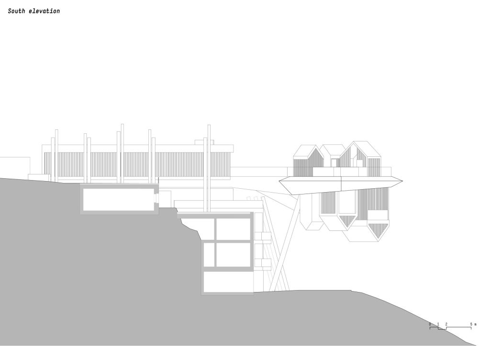
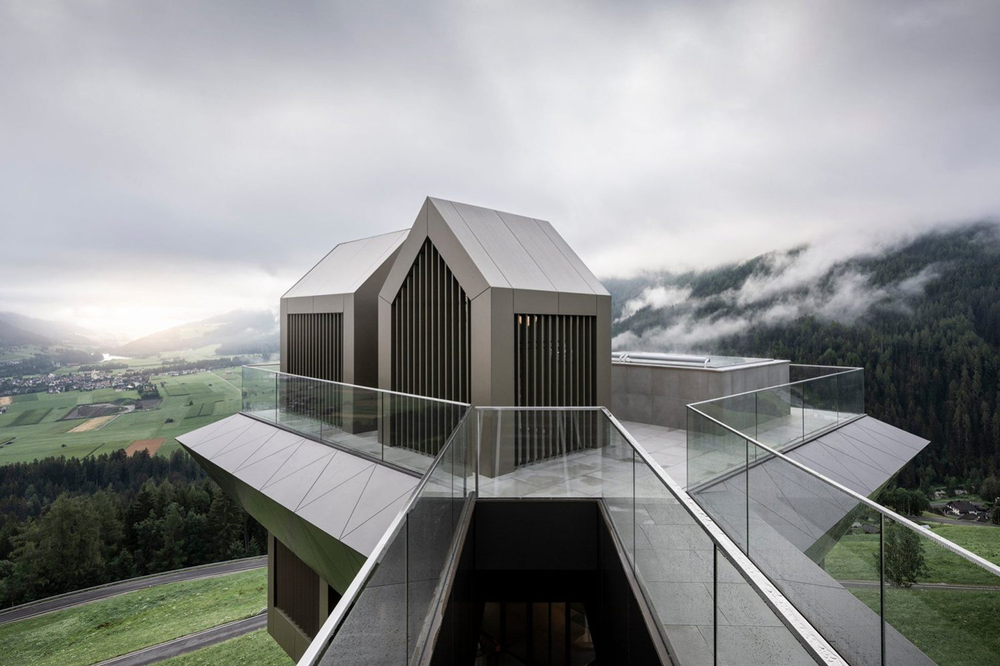
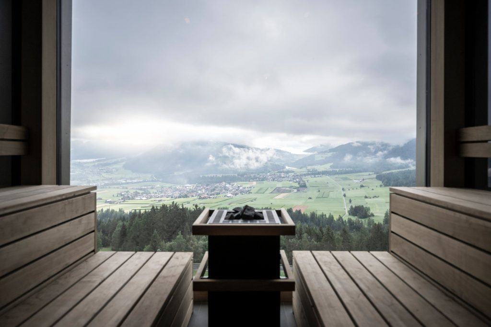

Студія noa кидає виклик гравітації
Студія noa network of architecture кидає виклик
гравітації у своєму новому проекті у Південному Тиролі. Спа-центр Hub of Huts став
частиною готелю Hubertus в італійській провінції, над яким бюро працювало у 2016
році.
Комплекс з невеликих об’ємів зі скатним дахом нагадує атмосферу італійського
гірського села, що парує в небі над красивими краєвидами. Знайти натхнення для
концепції допомогло спостереження за водяною гладдю: силуети будівель, встановлених
на високій платформі, продовжуються нижче, ніби повторюючи свої відбиття. Гра з
формами дозволила створити незвичайний комплекс, який нагадує «перевернене»
загублене в горах село.
-

Спа-центр знаходиться на відстані від основної будівлі готелю на південно-східній стороні курорту. Комплекс розташувався на платформі, яка парує на висоті 15 метрів над землею. Відвідувачі можуть потрапити всередину підвісним мостом. На верхньому рівні розташовані дві гідромасажні ванни, душові з панорамним виглядом та зона для передягання. З центрального залу нижнього поверху можна потрапити в лазню, фінську сауну, душову кабіну та відкритий басейн, звідки відкриваються чудові краєвиди на гори.
-

Завдання проектування оздоровчого центру Hub of Huts ускладнювалося для NOA тим, що у 2016 році архітектори студії вже створили тут, у готелі Hubertus, консольний басейн зі скляним дном. Тепер Network of Architecture необхідно було знову переосмислити архітектурну концепцію готельного комплексу вже з урахуванням свого минулого втручання. В результаті в гірській місцевості Південного Тіроль з'явилася нова консольна конструкція.
-

Плита, яка служить основою верхнього рівня та стелею нижнього, знаходиться на висоті 15 метрів над землею. Цю платформу підтримує консольна сталева плита та дві сталеві колони. З будівлі готелю сюди можна потрапити спеціальним підвісним пішохідним містком. На верхньому рівні розташовуються два басейни, дві душові та роздягальня. На нижньому - фойє, сауни, душові та третій басейн. Загальна площа Hub of Huts складає 460 кв. Розраховано оздоровчий центр на одночасне перебування 27 осіб.
Слідкуйте за цими та іншими новинами разом з нами!
- Hub of Huts
- Network of Architecture (NOA)
- Італія